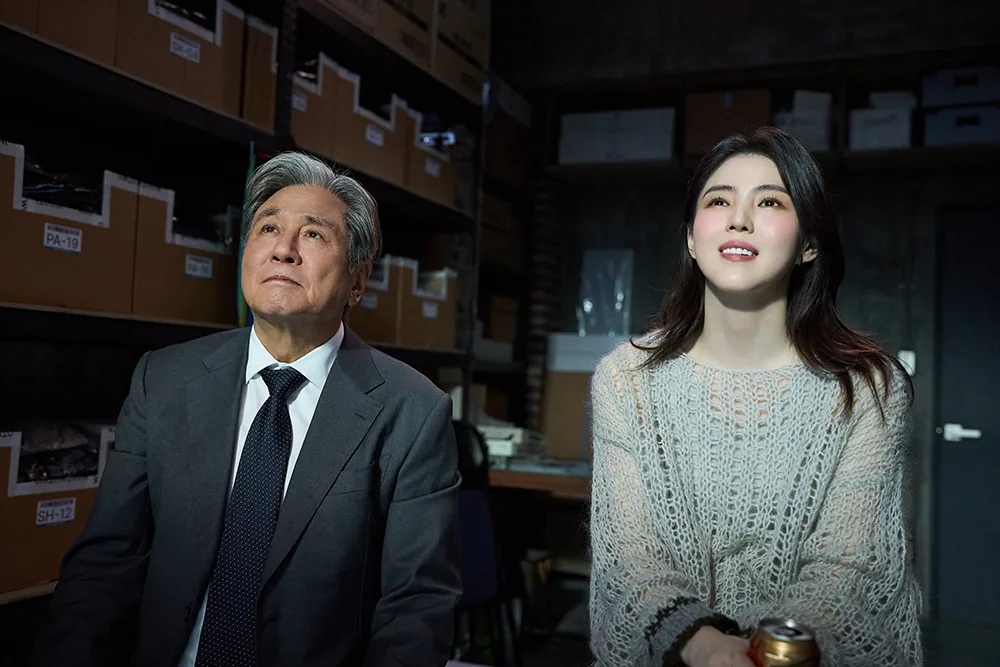
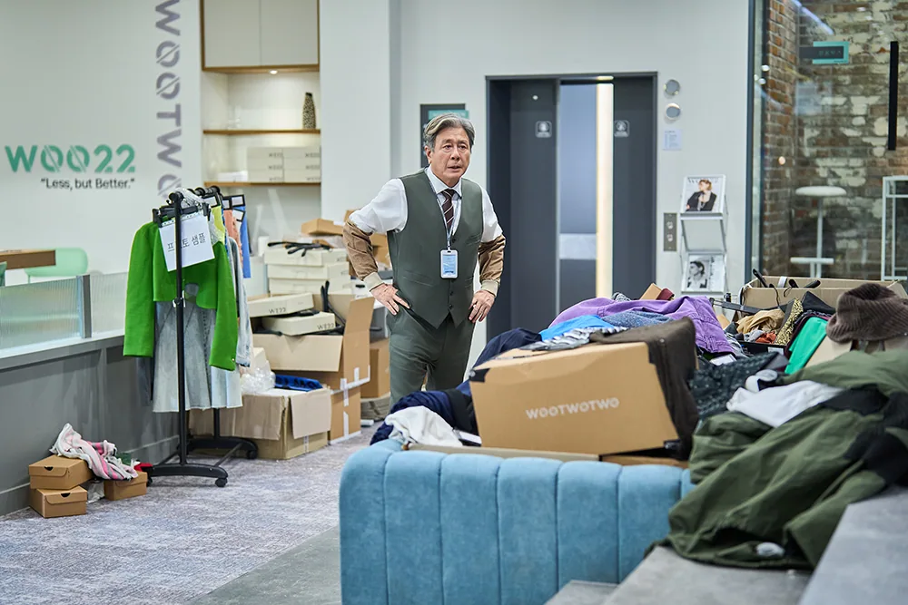
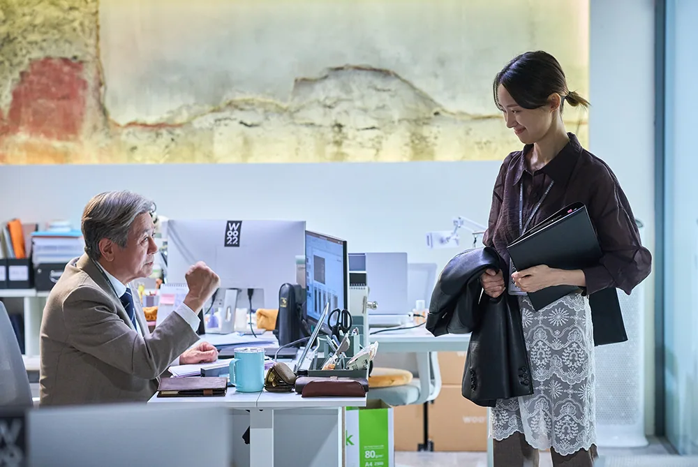
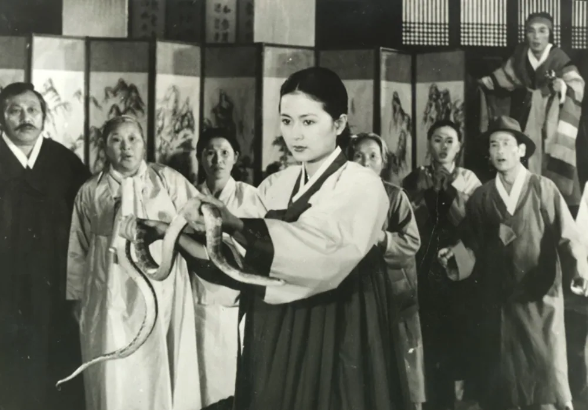
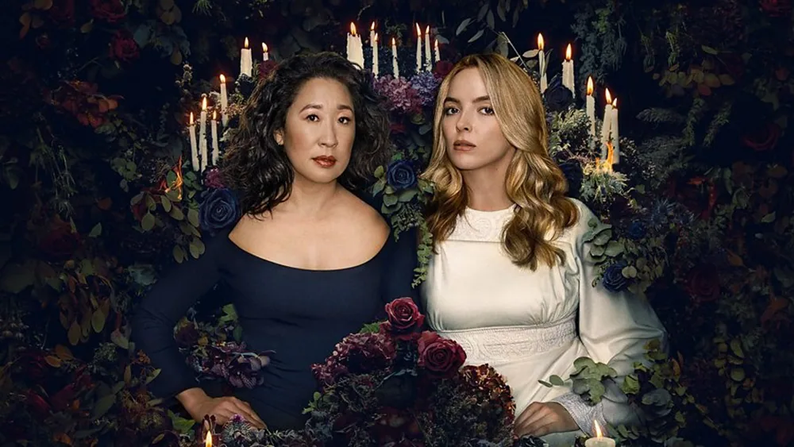

낸시 마이어스가 연출하고 앤 해서웨이, 로버트 드 니로가 출연한 영화 <인턴>은 2015년 한국 개봉 당시 360만 관객을 동원하며 사랑받았다. 이 영화의 한국 리메이크 기획은 최재원 앤솔로지스튜디오 총괄 프로듀서가 워너브러더스코리아 로컬 프로덕션 대표로 일하던 2016년에 시작했다. 이후 워너브러더스코리아 투자팀의 철수로 중지됐던 프로젝트는 최민식, 한소희 주연의 <인턴>으로 완성되어 지난 9월 16일 개봉했다.
최재원 총괄 프로듀서는 국내에 처음으로 영상투자펀드를 도입했고 아이픽처스, NEW, 바른손엔터테인먼트 등의 대표를 맡아 수많은 영화의 투자, 제작, 배급을 결정해 왔던 베테랑이다. <장화, 홍련>(2003), <좋은 놈, 나쁜 놈, 이상한 놈>(2008), <마더>(2009), <변호인>(2013), <거미집>(2023) 등 다수의 작품을 제작했다. 워너브러더스코리아 로컬 프로덕션 대표일 때는 <밀정>(2016), <마녀>(2018) 등을 제작, 투자하며 한국 영화시장과 할리우드 메이저 스튜디오의 가교 역할을 해왔다. 2020년 김지운 감독, 송강호 배우와 함께 앤솔로지스튜디오를 공동설립했고, 이제는 대표직 대신 총괄 프로듀서 직함을 달고 경영보다 프로젝트 발굴과 제작에 더 몰두하고 있다. <인턴>의 완성은 그에게 글로벌 신뢰 자본을 재확인하는 계기이자 새로운 방식의 협업에 녹아들 수 있는 기회였다. 이제는 오랜 숙제였던 <인턴>을 통해 배운 것들을 기억하면서, 앤솔로지스튜디오의 영화들이 한층 더 멀리 갈 수 있게 하기 위한 준비에도 한창이다.
Q 2016년 당시 <인턴> 리메이크가 왜 유효할 거라고 생각했나? 지금은 어떤 지점이 한국 관객의 마음을 공략할 수 있을까?
내가 알기로 <인턴>은 할리우드보다 아시아권에서 반응이 더 좋았던 영화다. 그때나 지금이나 ‘어른’에 대한 이야기가 많았는데, <인턴> 속 ‘어른’의 요소들이 한국에 잘 맞지 않을까 하는 생각을 했다. 2018년에 워너브러더스코리아에서 리메이크를 진행할 때 낸시 마이어스 감독도 한국에서 만드는 걸 너무 좋아하셨다. 특히 본사인 워너브러더스 디스커버리(이하 워너브러더스)는 IP 판매만이 아니라 공동제작과 배급까지 한다는 그림을 갖고 첫 프로젝트로 해볼 만하다고 판단했다. 이후 팬데믹이 오고 워너브러더스코리아 투자팀이 철수, 나도 회사를 나오면서 프로젝트를 접었다. 앤솔로지스튜디오를 만든 이후 <인턴> 리메이크 결정을 했던 헤드들이 다시 제안을 했다. 그리고 지금이 더 ‘어른’을 필요로 하는 시대 아닌가. 세대 갈등은 더 커졌고 정치적인 문제들로 이어져 있기도 하다. 나 역시 원작 속 벤(로버트 드 니로)의 나이에 가까워지면서 더더욱 공감해서 추진하게 됐다.
Q 애초에는 강윤성 감독과 최민식 배우가 <카지노>(디즈니+, 2022~2023) 전에 함께 하려던 작품이었다. 김도영 감독과 최민식·한소희 조합이 성사되기까지의 과정이 궁금하다.
인연이라는 게 있다는 생각이 든다. 그 중심에 언제나 최민식 선배가 계셨고. 최민식 선배는 누가 봐도 대체 불가였다. 다시 프로젝트가 진행됐을 때 강윤성 감독은 다른 스케줄이 있었고, 몇몇 감독들과 조율하다가 김도영 감독이 구원투수로 합류했다. 대선배와의 커뮤니케이션도 어렵고, 경력 많고 잔소리 많은 제작자도 있는데, 꿋꿋이 해내서 정말 고맙다. 조연들의 앙상블을 만들어낸 것도 김도영 감독의 안목과 능력이다. 지금껏 내가 만들어온 영화가 거친 오프로드를 드라이브하는 어드벤처였다면 <인턴>은 편안한 시골길을 가족들과 함께 가는 느낌이었다. 많이 배웠다.
한소희 배우는 최민식 선배가 평소 잘 아는 무술감독에게서 그녀가 이 리메이크를 무척 하고 싶어 한다는 얘기를 들으시고 어느 식사 자리에서 직접 연락을 하셨다. 이후 김도영 감독이 합류하면서 다시 한소희 배우를 만났고, 프로젝트의 시작을 기다려준 것을 고마워하면서 함께 가겠다고 결정했다. 한소희 배우는 현장에서 선배들을 많이 의지했고 특히 최민식 선배에 대한 끝없는 존경심을 보여줬다. <인턴>을 통해서 그녀도 성장했을 것이다.
Q 70대 백인 남성 인턴과 30대 여성 CEO라는 원작의 설정을 한국 사회의 정년, 재취업, 세대 및 직장 갈등으로 옮겼다. 각색에서 가장 공들인 변화와 원작에서 꼭 지키려고 한 것은 무엇인가?
꼭 가져가려던 것은 당연히 여성 CEO와 나이 많은 남성 인턴의 구조다. 실버 인턴이 여성 CEO에게 적절한 시기에 조언을 해주는 게 아버지나 선생님의 마음과는 다르다. 신뢰할 수 있는 어른이라는 게 중요했다. 원작에서 줄스(앤 해서웨이)가 출장지 호텔 방 침대에 벤과 함께 앉아서 차를 마실 수 있는 것은 그에게 편안함과 신뢰를 느끼기 때문이다. 다만 원작의 직장 생활이 너무 무난해서 내부 갈등이 필요했다. 실버 인턴이 아닌 50대 중반의 명예퇴직자로 설정하고 이야기를 만들기도 했지만 결국 원작으로 되돌아갔다. 지금은 김도영 감독과 최민식 선배의 의견이 반영된 버전이다. 원작과 달리 실버 인턴의 로맨스는 아닌 것 같다는 것도 최민식 선배 의견이었다.(웃음)


최재원 총괄 프로듀서는 원작의 여성 CEO와 나이 많은 남성 인턴 구조, 실버 인턴이 ‘신뢰할 수 있는 어른’이라는 점을 지키려고 했다
Q 원작 IP를 보유한 워너브러더스와의 협의는 어떻게 진행됐나? 워너브러더스가 요구한 조건이 있었을 텐데.
다행스러웠던 것은 내가 워너브러더스코리아 로컬 프로덕션 대표로 있을 때 한국영화 제작에 대해 많은 부분을 이해받았다는 거다. <밀정>(2016) 때 시나리오를 보여줬더니 하루도 안 되어서 하자고 답해왔다. 문제는 법무팀과 계약서를 쓰는 과정에서 생겼다. 그들의 계약서를 한국영화가 수용할 수 있는 상황이 아니었다. 그들 쪽에서는 한국영화계에서 투자사와 제작사의 수익 배분율이 6대 4라는 것, 최종 편집권이 감독에게 있다는 것 등이 말이 안 됐다. 계약서를 쓰는데 8개월이 걸렸다. 결국 촬영 시작 한 달 전에 계약서에 도장을 찍고 <밀정>을 촬영할 수 있었다. 그때 만들어 놓은 룰이 있어서 <인턴> 계약은 비교적 쉬웠다. 오히려 중요하게 협의해야 하는 사람은 원작자 낸시 마이어스 감독이었는데, 로컬라이징에 대해 충분히 이해해줬다.
Q 원작 <인턴>의 제작비는 3천500만 달러(당시 환율로는 400억 원) 정도였다. 리메이크 영화 <인턴>은 어떤가? 실제 제작에 들어간 2024년 상황에선 제작비 절감이 중요했을 텐데.
42회차로 찍은 영화다. 순제작비는 80억 원이다. 촬영 회차를 타이트하게 잡아서 절약한 비용을 세트에 많이 투입했다. 영화 속 패션 회사 WOO22(우투투)의 사옥 외관이 4층 정도이고, 영화 공간들은 계단을 왔다 갔다 하면서 두 층 안에서 해결하는 식으로 만들었다. 플래그십 스토어와 CEO 선우(한소희)의 집, 실버 인턴 기호(최민식)의 집 정도만 외부 공간으로 하고 에피소드를 벌리지 않는 규모로 만든 셈이다.
Q 결말이 원작과 다르다는 게 가장 큰 차별점이다. 결말의 선우의 선택은 어떻게 만들어졌나?
원작은 매우 보수적인 결말을 지닌 영화다. 기독교 베이스에 가족 중심의 이야기라서 이혼에 대해서도 부정적인 편이다. 이 부분들이 한국 사회와 맞지 않는다고 생각해왔다. 김도영 감독도 쿨하게 결말의 변화를 받아들였다. 오히려 조금 힘들어했던 것은 기업 생리의 묘사다. 회사 생활을 해보셨던 분이 아니어서다. 인물의 관계나 감정은 훨씬 더 잘 살려주셨다.


순제작비 80억 원의 <인턴>은 영화의 메인 공간인 패션 회사 WOO22에 비용을 많이 투입하며 세트 제작에 힘을 쏟았다
Q 워너브러더스코리아는 2020년 한국영화 투자에서 철수했는데, <인턴>으로 사실상 복귀했다고 볼 수 있나? 파라마운트 스카이댄스(이하 파라마운트)의 워너브러더스 인수 심사도 진행 중인데.
시장이 확장되기 위해서는 자본의 확장이 따라와야 한다. 워너브러더스가 어떻게 접근할지 판단하긴 어렵지만, <인턴>이 좋은 결과가 나와서 그들이 예전의 기억을 되살리며 한국영화의 좋은 파트너로 나서 주기 바란다. 파라마운트도 한국 시장에 대해 부정적이지 않다고 알고 있다.
Q 워너브러더스는 2024년 CJ ENM과 양사 IP들의 리메이크 프로젝트 계약을 체결한 바 있다. 이와 별도로 앤솔로지스튜디오와 워너브러더스의 다른 리메이크 작업도 이루어질 수 있을까?
<인턴>이 잘 되면 CJ ENM만큼 앤솔로지스튜디오도 기회를 만들 수 있지 않을까. 솔직히 워너브러더스 IP 중에서 리메이크하고 싶은 작품이 많다. 특히 히치콕 영화나 1970~80년대 영화들을. 브래들리 쿠퍼와 레이디 가가의 <스타 이즈 본>(2018)을 보고, 같은 작품을 먼저 리메이크했던 바브라 스트라이샌드 주연의 1976년 영화 <스타 탄생>이 훨씬 재밌다고 느꼈다. 그 리메이크도 한번 생각해보게 된다. 창작 아닌 리메이크가 어떤 의미가 있을까 싶었는데, 지금은 리메이크 영화를 많이 기획하고 있다. 예전 감성을 요즘 시대에 맞게 풀어보는 게 흥미롭다.
Q 지금 사무실 안 화이트보드에 진행 중인 프로젝트가 잔뜩 적혀 있다.
지금 하고 있는 영화와 시리즈들이다. 그중에 리메이크 작품이 3개나 있다. <피막>은 1981년 이두용 감독의 영화 <피막>의 리메이크다. 한국영화 최초로 베니스국제영화제에 초청된 영화이지 않나. 한국영상자료원에서 복원해 유튜브에 올린 것을 김지운 감독과 함께 보다가 지금 시대로 가져와도 되지 않겠냐는 얘기를 하게 됐다. 에로틱 오컬트 영화로 만들 수 있지 않을까 생각 중이다. 원작자들이 다 돌아가셔서 유족들과 판권 해결에 시간이 걸렸다.
<드리샴>은 한국에서 시도하는 인도영화의 첫 번째 리메이크다. 곽경택 감독 연출로 내년 1월 크랭크인 예정이다. <킬링 이브>(BBC America, 2018~2022) 시리즈도 한국 시리즈로 리메이크할 예정이다. <킬링 이브> 판권을 가져오면서 원작자에게 우리 기획 <휴먼 마트>의 판권을 주기도 했다. 일종의 판권 교환이다.(웃음) <휴먼 마트>는 한국 시리즈로도 만들어질 예정이다. <승리호>(2021)의 조성희 감독이 연출하고, 올겨울 프리 프로덕션에 들어간다. 모든 세계가 다 24시간 전으로 돌아가는데, 사람의 기억은 고스란히 남는다는 세계관 하에서 벌어지는 이야기다. 나라별 시리즈가 가능하다. <인간증발>은 <악인전>(2019)의 이원태 감독이 연출하고 한창 캐스팅 중이다.
<오퍼링>은 1997년 IMF 때 서울에 들어온 검은 머리 외국인의 이야기를 다룬 미국 소설을 영화화한다. 이창동 감독의 <가능한 사랑> 공동제작사인 어나니머스 콘텐츠가 이 영화 공동제작사이기도 하다. <라이스보이 슬립스>(2023)의 앤소니 심 감독이 연출하고 박은교 작가가 시나리오를 썼다. 캐스팅을 곧 시작한다. <웨딩 시즌>은 <더 마블스>(2023), <28년 후: 뼈의 사원>의 니아 다코스타 감독이 연출하는 리미티드 시리즈로, 오는 10월 넷플릭스에 피칭을 한다. 니아 다코스타는 1989년생인데, 그의 인생 드라마가 <내 이름은 김삼순>(MBC, 2005)이다. <웨딩 시즌>은 한국에서 촬영이 80% 이루어진다. 이 외에 <조용한 가족>(1998)의 미국판 같은 <피쉬 본(Fish Bone)>, 듀나 작가 원작을 할리우드 감독이 연출하는 <카운트 웨이트(Count Weight)>, 김보영 작가의 SF 소설을 할리우드 작가가 각색하는 <아임 웨이팅 포 유(I’m Waiting For You)> 등이 있다.


앤솔로지스튜디오에서 리메이크 진행 중인 이두용 감독의
원작 영화 <피막>(위)과 BBC America의 인기 시리즈 <킬링 이브>
(제공=세경흥업, BBC One 홈페이지)
Q 글로벌 프로젝트를 너무 많이 하고 있는 것 아닌가.(웃음)
지난 5년 동안 정말 열심히 준비했다. 나는 가장 한국적인 것이 글로벌적인 것이라고 생각하지 않는다. 무책임한 말이다. 한국적인 소재를 글로벌하게 만들려면 글로벌적인 사고와 언어, 커뮤니케이션이 바탕이 되어야 한다. 그래서 앤솔로지스튜디오는 송순호 대표 이하 모든 직원이 전부 바이링궐(bilingual, 이중언어)이다. 내가 영어를 가장 못 한다.(웃음) 그리고 앤솔로지스튜디오는 홀로 작업하지 않는다. 그렇게 할 수도 없고. 파트너들이 많다. <인간증발>은 비에이엔터테인먼트의 장원석 대표와 같이 시작한다. 앤솔로지스튜디오는 그렇게 일종의 마중물 역할을 하고 싶다.
Q 앤솔로지스튜디오의 글로벌 프로젝트 중 가장 완성에 가까운 작품이 <더 홀>이다. 편혜영 작가의 소설 <홀>이 원작이고, 김지운 감독이 연출을 맡았다. 이 프로젝트가 아마존 MGM 스튜디오(이하 아마존 MGM)와의 계약까지 온 과정이 궁금하다.
<더 홀>은 100% 미국영화다. 한국 감독이 한국 배우들, 100% 한국 스태프들과 한국에서 100% 촬영했는데, 자본이 미국 자본이라서 한국영화가 아니다. 미국 측에서 편혜영 작가의 소설 <홀> 판권을 사서 1차 각색고를 냈다. 할리우드 에이전시 CAA(Creative Artists Agency)가 김지운 감독에게 연출할 만한 영화들을 추천했을 때 그중에 <더 홀>이 있었다. 시나리오를 보고 내용상 한국에서 찍어도 되겠다는 생각에 주인공들을 국제 부부로 바꿔서 제안을 했다. 시나리오 작가인 크리스토퍼 첸의 와이프가 한국인이었는데, 한국에 대한 이해가 있어서 우리 의견을 받아들여 시나리오를 수정했다.
투자는 초기에 루소 형제들과 일했던 마이크 라로카 쪽과 할리우드 에이전시 CAA가 설립한 투자 회사 라이브러리 픽쳐스, 두 곳에서 투자가 들어왔다. 마이크 라로카가 이후 디파트먼트 M으로 옮겼고, 카타르 쪽에서도 투자가 들어와서 제작비가 100% 만들어졌는데, 디파트먼트 M이 제작비를 낮추라고 요구했다. 순제작비는 1천600만 달러였는데, 한국에서 100% 촬영하면서 1천200만 달러로 30% 낮췄다. 한국에서 100% 찍다 보니 배경 CG 처리 등에 들어가는 비용이 많긴 했다. 미국 배우들과 언어 커뮤니케이션, 후반작업에서의 협력 등 많은 노하우를 쌓았다. 촬영하고 있는 동안 디파트먼트 M이 아마존 MGM과 높은 가격에 계약했다.
Q <더 홀>의 편집을 아직도 하고 있다고?
편집 중이고 한국 개봉 버전은 디렉터스 컷으로 생각하고 있다. 아마존 MGM 쪽에서 보내오는 노트(Notes, 수정의견)를 보면 우리와 정서적인 차이가 있기 때문이다. 묘하게도 <인턴>은 또 다르다. 미국 측에서 시사를 한 후 원작보다 재미있다는 소리를 꽤 들었다. 영미권은 모르겠지만 유럽, 특히 아시아 쪽은 확실히 반응이 있을 것 같다.
Q 한국영화의 투자환경이 복잡하다. 투자는 위축되고 기존 제작사들도 공동제작, 해외 선판매, 온라인동영상서비스(OTT) 글로벌 자본을 통해 리스크를 분산하려고 한다. 지금 한국영화의 투자 환경을 어떻게 바라보나?
영화 투자를 처음 시작한 게 1999년이었다. 한국영화의 르네상스 시기라고 해서 영화 펀드를 만들었는데, 인덱스 투자를 했던 이들은 괜찮았지만, 개별 영화에 투자했던 이들은 영화에 따라 희비가 엇갈렸다. 팬데믹이라는 변수도 발생했다. 결국 해외 자본으로 시작해서 시장을 넓히는 방법으로 가보자는 생각을 했다. 다행인 것은 OTT로 몰렸던 시장에 한계가 온 것 같다는 것이다. 다시 극장에 나와서 타인들과 함께 즐기는 관람 문화에 대한 욕구가 살아나고 있다. <왕과 사는 남자>가 그런 회복의 계기를 만들어준 것 같아서 고맙다.
그간 나를 포함한 많은 한국영화 프로듀서들이 OTT 담당자들의 취향에 맞추거나 너무 쉽게 작품에 접근했던 게 아닌가 싶다. 목숨 걸고 내 영화를 만들어서 투자자를 설득해야 하는 게 프로듀서가 할 수 있는 유일한 일이다. 한편으로 투자자들에게 바라는 것은 한국 영화인을 믿어달라는 것이다. 함부로 고치려 들지 말고, 늘 같은 배우만 선호하지 말고, 모험을 해줘야 한다. 가장 중요한 건 정부의 역할이다. 영화진흥위원회도 더 적극적이면 좋겠다. 추경 덕분에 상업영화 지원 예산도 역대급이니, 더 많은 영화를 만들어 산업 자체가 단단하게 되는 구조를 만들면 좋겠다.
<인턴> 오리엔테이션 영상